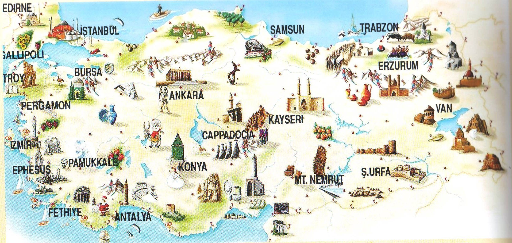
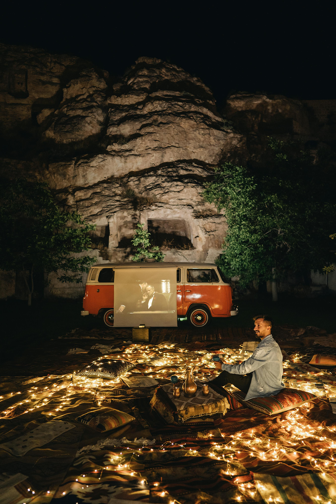

D2 Yetki Belgeli Araçlarımız ile;

Türkiye'nin Dört Bir Yanına Ziyaret Gezilerimiz
Turizm Rehberi olarak, Türkiye'nin her köşesine düzenlediğimiz ziyaret gezileri ile müşterilerimize unutulmaz deneyimler sunuyoruz. Ege'nin huzur veren sahillerinden, Kapadokya'nın mistik manzaralarına kadar her yere konforlu araçlarımızla güvenle ulaşabilirsiniz.
Düğün, Kına ve Nişan Etkinlikleri
Özel günlerinizin daha da özel olabilmesi için profesyonel araçlarla düğün, kına ve nişan etkinliklerinizi unutulmaz hale getiriyor. Etkinlikleriniz için konforlu ve güvenli bir seyahat deneyimi sunuyoruz. Geniş araç seçeneklerimiz ve deneyimli sürücülerimiz ile tüm etkinliklerinizde yanınızdayız.

Özel Tatil Planları
Hayalinizdeki tatili planlamak hiç bu kadar kolay olmamıştı! Özel tatil planlarınızı en ince detayına kadar belirleyerek, unutulmaz bir deneyim yaşamanız için sizi özel araçlarımızla istediğiniz destinasyona taşıyoruz. İster romantik bir tatil, ister aile gezisi ya da arkadaşlarınızla eğlenceli bir tatil planı yapın, tüm detaylarla ilgileniyor ve seyahatinizi en rahat şekilde geçirmeniz için gereken her şeyi sağlıyoruz.